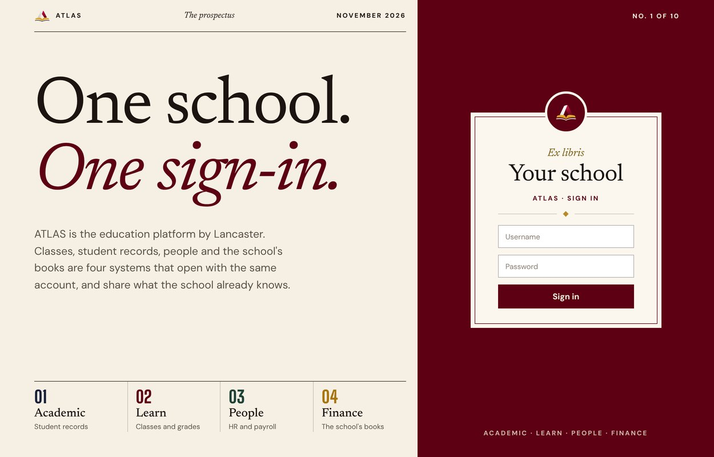
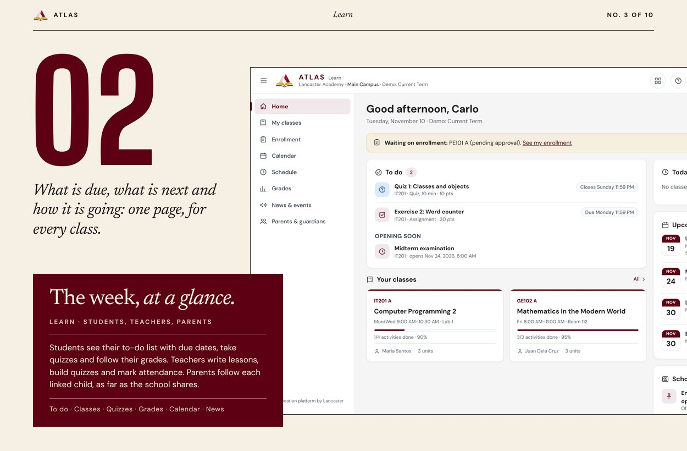
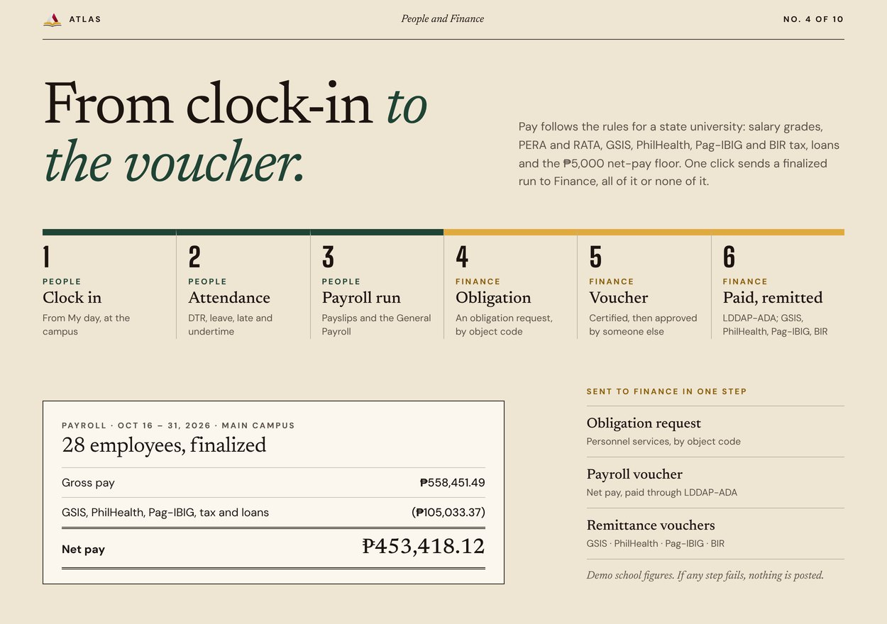
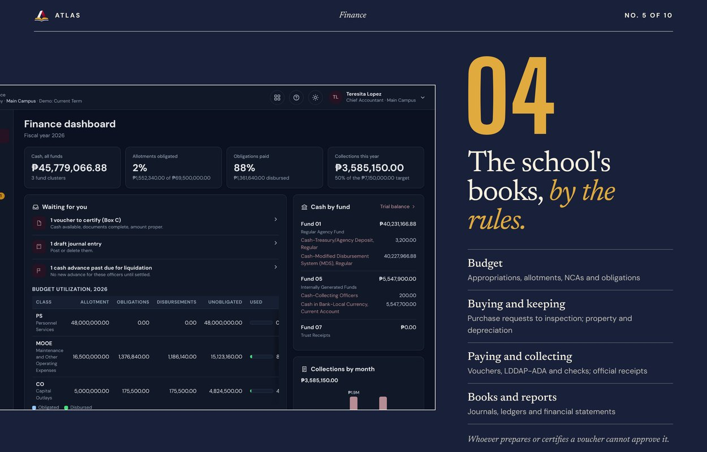
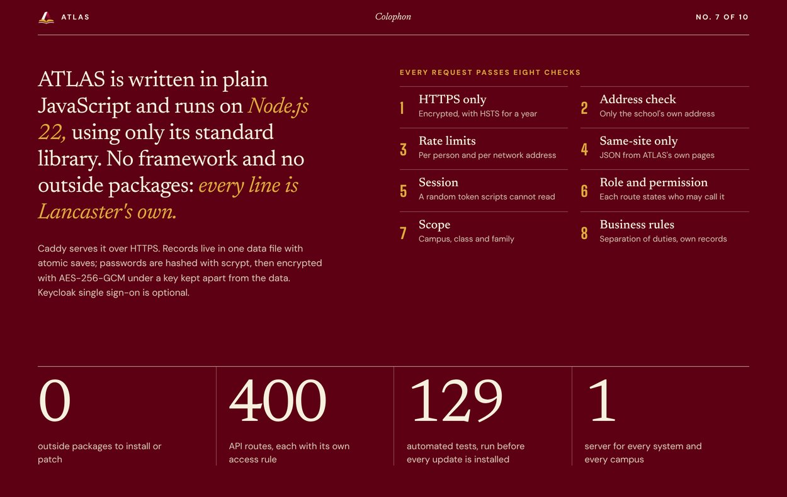
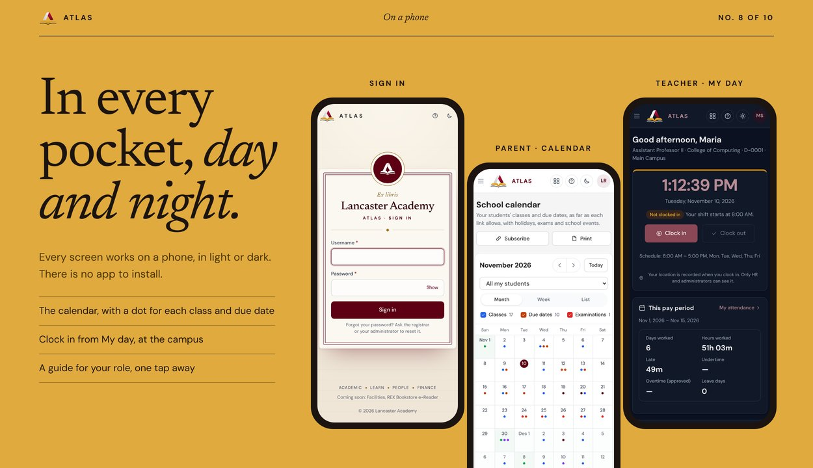
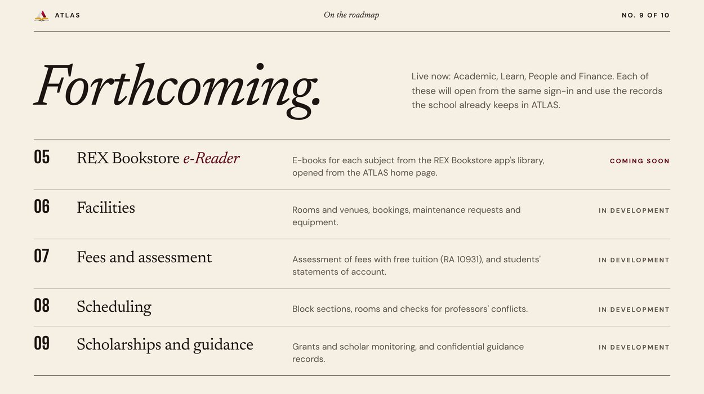
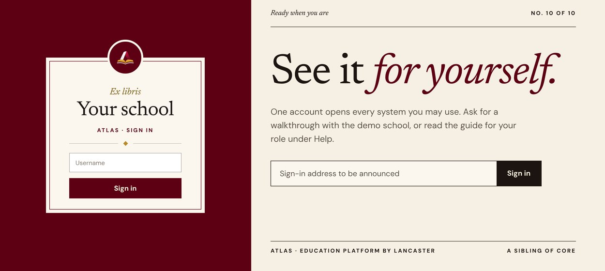

![Four systems, one record of the school. 01 Academic (UIS), the registrar's and the dean's office: admissions and student records, curricula and evaluation, grade sheets, transcripts with a QR check, CHED and FHE reports. 02 Learn (LMS), the classroom: enrollment and sections, lessons and resources, quizzes and exams, attendance and grades, news, events and the calendar. 03 People (HRIS): employee records, time clock and DTR, leave and approvals, government payroll, payslips and remittances. 04 Finance (FMIS), following COA, DBM and BIR rules: budget and obligations, procurement and property, vouchers and receipts, journals and ledgers, financial statements. Across all four: one sign-in, roles and permissions, many campuses, the school calendar, Help and guides, optional Keycloak single sign-on.](email/g02.jpg)
![A page for everyone at the school. Students: see what is due, take quizzes, follow grades, ask to enroll, request documents. Parents and guardians: follow each linked child. Teachers: lessons, quizzes, attendance, grade sheets, clock in and file leave. Registrars and deans: admit and enroll, keep records, approve grade sheets, issue transcripts. HR and payroll: employee records, attendance, leave, government payroll. Finance offices: budget, procurement, vouchers, receipts and the books. Administrators: one Settings center with history and undo, roles and permissions, campuses and single sign-on.](email/g06.jpg)